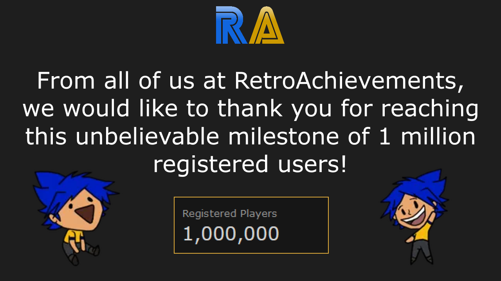

Community News
 By
RANews
By
RANews
Contents
1,000,000 Registered Players

Community Manager
Please join me in welcoming  Nepiki as our first Community Manager at RetroAchievements.
Nepiki as our first Community Manager at RetroAchievements.
Community Manager roles:
- Helping facilitate better communication between users and the various teams to ensure everyone feels heard and supported.
- Helping navigate misunderstandings and conflicts, ensuring our community remains a welcoming space for all.
- Helping oversee our various social platforms (Discord, the site forums, Reddit, etc) to make sure everyone on those platforms feels heard.
- Helping us with moderation support: managing people who talk about piracy, are toxic to others, or otherwise break our Code of Conduct.
Hash Compatibility Testing
The QA-team is happy to announce a new process for hash compatibility testing! This allows users to help test hash compatibility for existing sets. You can work with the developer on testing new hashes while mastering the set to verify compatibility.
More information can be found in the docs at Player Compatibility Testing.
PlayTester Revamp
The PlayTester team has been revamped in order to expand the team and its current capabilities. Playtest request can be submitted and discussed via Discord in the new forum channel.
Reach out to  TimeCrush for more information.
TimeCrush for more information.
Cheat Investigation
We’ve started an official cheat team and created the dedicated account  RACheats.
RACheats.
If you suspect anyone may be cheating or see suspicious scores/times, you can send a DM to that account and the team will look into it.
Official RA YouTube
The official RetroAchievements YouTube Channel has passed 1,000 subscribers. We’re looking for users who may already have videos or would like to make videos to contribute to the channel.
Type of content we’re looking for:
- “What is RetroAchievements” - A Channel Intro video showcasing what the website is all about!
- Emulation Tutorials,
- Developer Tutorials,
- Achievement Guides,
- Announcement Videos,
- Reviews,
- Top 10’s
- …and more!
If you’re interested in making content for the channel reach out to  Snow via DM!
Snow via DM!
Terraria Standalone
Terraria found its way into our lives in 2011 and remains one of the best indie games ever released, with constant updates such as Journey’s End, Journey’s Actual End and most recently Labor of Love because they just can’t stop supporting their fans.
This has led to extensive mod tools, a thriving modding scene and now,  timenoe has created a mod that integrates the game with RetroAchievements!
timenoe has created a mod that integrates the game with RetroAchievements!
 Terraria Terraria |
 Terraria [Subset - Completionist] Terraria [Subset - Completionist] |
 Terraria [Subset - Player Difficulties] Terraria [Subset - Player Difficulties] |
 Terraria [Subset - World Modes & Seeds] Terraria [Subset - World Modes & Seeds] |
To get started, you’ll need tModLoader on Steam, you’ll then be able to find the RA mods in the in-game mod browser. It requires that you already own Terraria.
Discord Revamp
Over the years, our community has grown significantly, and the Discord server has been a major part of that. With this much growth, it was a difficult task to keep the server nice and tidy, and many people felt it was hard to navigate. For that reason, there have been several changes to the entire Discord that aim to:
- Have the server become more welcoming to (new) users.
- Easier to navigate by more carefully using categories to separate channels.
- Distinguish channels with emojis to better demonstrate what the purpose of each channel is.
- Preparations in case of future channel additions.
Team Additions
| Quality Assurance | ||
|---|---|---|
 Raichi Raichi |
 cdpowe cdpowe |
 s0uth s0uth |
 Brandovsky Brandovsky |
 Amir96lx Amir96lx |
| Code Reviewer |
|---|
 Yanbetari Yanbetari |
| Developer Compliance |
|---|
 zxmega zxmega |
| Site Cleanup | ||
|---|---|---|
 kiwibasket kiwibasket |
Brandovsky |
 Cadaxar Cadaxar |
 TheJediSonic TheJediSonic |
| DevQuest |
|---|
| s0uth |
| Rollout Team | ||
|---|---|---|
 Hexadigital Hexadigital |
s0uth |
 Yurana Yurana |
 BahamutVoid BahamutVoid |
 ThatAmericanSlacker ThatAmericanSlacker |
Developer Compliance
Set Approvals
- Phantasy Star 0 [Subset - Completionist]
- The Nightmare of Druaga: Fushigi no Dungeon [Subset - Item Combinations]
- Mega Man Zero 4 [Subset - Bonus]
- Mario Kart 64 [Subset - Shortcuts]
- Diddy Kong Racing [Subset - Unorthodox Racing]
Achievement & Set Updates
| Set | Achievement | Description | Update |
|---|---|---|---|
 Kirby: Squeak Squad | Kirby: Mouse Attack Kirby: Squeak Squad | Kirby: Mouse Attack |
|
Collect all Ghost Medal pieces, and then solve: Pokemon Ver Too Much Land + Veg O Matic + Krabby | Demoted for Unwelcome Concept: Secret Achievement |
| Kirby: Squeak Squad | Kirby: Mouse Attack |
|
Collect all Ghost Medal pieces, and then solve: Mario 2 Fruit + On the bus they go round and round + Resident Evil City | Demoted for Unwelcome Concept: Secret Achievement |
| Kirby: Squeak Squad | Kirby: Mouse Attack |
|
Collect all Ghost Medal pieces, and then solve: Pikachu + Merlin + FF6 Wild Child Squared | Demoted for Unwelcome Concept: Secret Achievement |
| Kirby: Squeak Squad | Kirby: Mouse Attack |
|
Collect all Ghost Medal pieces, and then solve: Inside DK64 Grenades + Ryu or Ken + Rocky Balboa | Demoted for Unwelcome Concept: Secret Achievement |
| Kirby: Squeak Squad | Kirby: Mouse Attack |
|
Collect all Ghost Medal pieces, and then solve: Hershey + Olympic Event + Disney Police Bobcat | Demoted for Unwelcome Concept: Secret Achievement |
| Kirby: Squeak Squad | Kirby: Mouse Attack |
|
Collect all Ghost Medal pieces, and then solve: Member Berries + Dinorex + Casper | Demoted for Unwelcome Concept: Secret Achievement |
| Kirby: Squeak Squad | Kirby: Mouse Attack |
|
Collect all Ghost Medal pieces, and then solve: Need for Speed Subtitle + Roswell + Bad Clayfighter Character | Demoted for Unwelcome Concept: Secret Achievement |
| Kirby: Squeak Squad | Kirby: Mouse Attack |
|
Collect all Ghost Medal pieces, and then solve: Cool Cool Mountain + Inside 999 Wristbands + Mario Enemy named Monty | Demoted for Unwelcome Concept: Secret Achievement |
| Kirby: Squeak Squad | Kirby: Mouse Attack |
|
Collect all Ghost Medal pieces, and then solve: Minecraft Villager Currency + Marios Original Weapon + Squirtles First Water Move | Demoted for Unwelcome Concept: Secret Achievement |
| Kirby: Squeak Squad | Kirby: Mouse Attack |
|
Collect all Ghost Medal pieces, and then solve: Calcium Carbonate + Naruto + Mickey Mouse with a Hat | Demoted for Unwelcome Concept: Secret Achievement |
| Kirby: Squeak Squad | Kirby: Mouse Attack |
|
Collect all Ghost Medal pieces, and then solve: Atlantic or Pacific + Oz Transportation + BoxBoy | Demoted for Unwelcome Concept: Secret Achievement |
| Kirby: Squeak Squad | Kirby: Mouse Attack |
|
Collect all Ghost Medal pieces, and then solve: Hedgehog + Thors C4 + Mega Man 2 Boss | Demoted for Unwelcome Concept: Secret Achievement |
 Bomb Jack Bomb Jack |
|
Perform either the “Infinite Lives” or “Invincibility” cheat code. [Disables rest of the Achievements] | Demoted for Unwelcome Concept: Zero Effort |
 Final Fight Final Fight |
|
Hit your partner (2P Mode) | Demoted for Unwelcome Concept: Requires 2 players |
 Giana Sisters DS Giana Sisters DS |
|
Shoot 150 energy balls | Demoted for Unwelcome Concept: Zero Effort |
| Giana Sisters DS |
|
What is the name of the character that this game was inspired by? [Write in one of the Save Slots] | Demoted for Unwelcome Concept: Zero Effort |
 Bionic Commando Bionic Commando |
|
Fall during upper view phase | Demoted for Unwelcome Concept: Zero Effort |
 The Legend of Zelda: Link’s Awakening The Legend of Zelda: Link’s Awakening |
|
Complete the game with 0 deaths to help Marin fulfill her dream. | Title/Description Update: Secret Achievement |
Site Updates
RAWeb 6.24.0
New Features
- Achievements: allow developers to delete unofficial achievements by @wescopeland in #2969
- Developer Feed: migrate to the new UI framework by @wescopeland in #2981
- Developer Interest: migrate to the new UI framework by @wescopeland in #2997
- Emulators: notify clients of impending hardcore restriction by @Jamiras in #2965
- Events: include AotM achievements in AotW event by @Jamiras in #3004
- Game Tables: improve ‘Claimed’ column UX by @wescopeland in #2986
- Game Tables: don’t auto-close on column toggle by @wescopeland in #2998
- Game Tables: always default sort All Games by player count by @wescopeland in #2999
- Home Page: support pinned news posts, highlight recent news by @wescopeland in #2959
- Hubs 2.0: add support for content warnings by @wescopeland in #2952
- Hubs 2.0: restore forum topics by @wescopeland in #2968
- Users: split Staff Dev role into separate roles (QAM, DevC, CR), add Community Manager vanity role by @wescopeland in #2972
Bug Fixes
- Achievements: hide Create Ticket button if user cannot create tickets by @wescopeland in #2967
- Annual Recap: reduce memory required to start command by @Jamiras in #3003
- Annual Recap: don’t report 0 unlocked achievements by @Jamiras in #3009
- Comments: Fix white space and HTML injection by @wescopeland in #3012
- Forums: strip HTML from posts by @wescopeland in #3000
- Game Tables: on mobile, don’t always disable random game button by @wescopeland in #2996
- Game Tables: remediate integrity constraint violation error by @wescopeland in #3002
- Game Tables: prevent over-prefetching on mobile by @wescopeland in #3001
- Home Page: resolve CSS issue in trending games when game title is long by @wescopeland in #2971
- Home Page: remediate CSS issue on iOS 17.5 and lower by @wescopeland in #2979
- Home Page: prevent some forum posts from overflowing the page layout by @wescopeland in #3013
- Leaderboards: log updates correctly by @wescopeland in #2993
Management Console Changes
- Achievements: remove searchable attribute from BadgeName by @wescopeland in #3007
- Claims: move Expiring Claims page to the management app by @wescopeland in #2985
Web API Changes
Environment Changes
- Add dedicated SEO component, fix several SEO issues by @wescopeland in #2966
- Enforce vitest coverage thresholds by @wescopeland in #2970
- Migrate forum DB tables to modern schemas by @wescopeland in #2946
- Add custom client-side routing component by @wescopeland in #2960
- Sync tags to the taggables table by @wescopeland in #2963
- Reduce excessive React re-rendering by @wescopeland in #2973
- Delete SystemGamesPageService by @wescopeland in #2976
- Add max-w-fit classname to avatar components by @wescopeland in #2982
- Use BuildAchievementOfTheWeekDataAction to eliminate duplicate code by @Jamiras in #3005
- Migrate analytics PHP code to an action, add coverage by @wescopeland in #2974
RAWeb 6.25.0
New Features
- Events: add achievement checklist page by @Jamiras in #3018
- Multiset: handle r=ping correctly by @wescopeland in #2983
- Player Game Activity: migrate page to React by @wescopeland in #3006 and #3019
Bug Fixes
- Annual Recap: exclude event awards from mastery stats by @Jamiras in #3010
- Developer Feed: speed up slow query by @wescopeland in #3015
- User Profiles: exclude events from recently played games at the query level by @Jamiras in #3030
Management Console Changes
Web API Changes
- API_GetAchievementOfTheWeek: fix DateAwarded not being sent for event acheivement unlocks by @Jamiras in #3022
- API_GetAchievementOfTheWeek: ensure newest winners are first in AotW API response by @Jamiras in #3023
Environment Changes Seeders: fix forum seeder by @Jamiras in #3025
RAWeb V7 2025.01.23
New Features
- Add support for name changes (beta) by @wescopeland in #3017
- Add support for versioned achievement, leaderboard, and rich presence logic by @wescopeland in #2995
- Events: show award tiers on the event page by @Jamiras in #3082
- Events: automatically grant event awards to users by @Jamiras in #3067
- Events: add checkbox to hide inactive achievements on event page by @Jamiras in #3042
- Forums: migrate create topic create page to new UI framework by @wescopeland in #3077
- Forums: migrate edit post page to new UI framework by @wescopeland in #3021, #3068, and #3083
- Forums: add a new [quote] shortcode by @Jamiras in #3074
- Games: migrate Game Suggestions page to the new UI framework by @wescopeland in #3058
- Games: migrate Personalized Suggestions page to the new UI framework by @wescopeland in #3045
- Home: embellish all-time high label when recording a new currently online all-time high by @wescopeland in #3047
- Home: link directly to the AOTW event page by @wescopeland in #3048
- Home: show the user’s current AOTW unlock status by @wescopeland in #3054 and #3088
- Localization: add Vietnamese language support by @Colony21 in #3053
- News: add a basic ‘category’ field by @wescopeland in #3073
- Users: fully support the Visible Role field and make the permissions matrix public by @wescopeland in #3087
Bug Fixes
- Analytics: remediate exception thrown on base URLs by @wescopeland in #3055
- Connect: correctly process User-Agent with multiple spaces in OS by @Jamiras in #3050
- Events: hide future event achievement selection on the event page by @Jamiras in #3085
- Events: show the progress component on mobile by @wescopeland in #3046
- Events: prevent exception accessing achievement checklist page without list parameter by @Jamiras in #3051
- Events: solve a translation issue by @wescopeland in #3063
- Game Tables: add breadcrumbs to systems game table by @wescopeland in #3060
- Game Tables: ignore ‘Remember my view’ page index of 0 by @wescopeland in #3043
- Game Tables: remediate issue with release date sorting by @wescopeland in #3059
- Tooltips: detect when to use cursor-help classname by @wescopeland in #3049
- Users: query for game_sets in SeparateAwards() by @wescopeland in #3066
Management Console Changes
- Events: allow event managers to unlock event achievements by @Jamiras in #3069
- Events: fix an issue with breadcrumbs by @Jamiras in #3076
- Events: allow creating events directly from events list by @Jamiras in #3020 and #3057
- Games: move Similar Games and Hubs management directly to the management app to prepare for Hubs 2.0 by @wescopeland in #3032
- News: restrict post access to proper roles by @wescopeland in #3079
API Changes
- Connect: remediate allprogress endpoint exception by @wescopeland in #3062
- Connect: hook up startsession and unlocks routines for multiset by @wescopeland in #3086
Environment Changes
- Models: add HasSelfHealingUrls trait by @wescopeland in #3078
- Testing: switch vitest pool mode to ‘threads’ by @wescopeland in #3041
- Testing: resolve flake from randomness by @wescopeland in #3056
DevQuest
DevQuest Awards
 [DevQuest 002] Retro Renovator [DevQuest 002] Retro Renovator |
||
|---|---|---|
 xTr4ceur xTr4ceur |
||
 Dragon Ball Z: Buu's Fury (GBA) Dragon Ball Z: Buu's Fury (GBA) |
||
 Crash of the Titans (GBA) Crash of the Titans (GBA) |
||
 Spyro Orange: The Cortex Conspiracy | Spyro: Fusion (GBA) Spyro Orange: The Cortex Conspiracy | Spyro: Fusion (GBA) |
||
 [DevQuest 002-II] Retro Renovator II [DevQuest 002-II] Retro Renovator II |
||
|---|---|---|
 Sines Sines |
||
 Zed Blade | Operation Ragnarok (ARC) Zed Blade | Operation Ragnarok (ARC) |
||
 ~Unlicensed~ Street Fighter II (NES) ~Unlicensed~ Street Fighter II (NES) |
||
 Urbz, The: Sims in the City (NDS) Urbz, The: Sims in the City (NDS) |
||
 [DevQuest 003] Singles in Your Area [DevQuest 003] Singles in Your Area |
||
|---|---|---|
| s0uth |
||
 [DevQuest 006] The Unwanted [DevQuest 006] The Unwanted |
||
|---|---|---|
 DrewMHax0r DrewMHax0r |
||
 Activator (CPC) Activator (CPC) |
||
 [DevQuest 009] Launch Party! [DevQuest 009] Launch Party! |
||
|---|---|---|
 RyCuLe RyCuLe |
||
 Black & Bruised (GC) Black & Bruised (GC) |
||
 [DevQuest 020] Genre Conqueror [DevQuest 020] Genre Conqueror |
||
|---|---|---|
 suspect15 suspect15 |
||
 [DevQuest 022] This Belonged in a Museum! [DevQuest 022] This Belonged in a Museum! |
||
|---|---|---|
 kmpers kmpers |
||
 ~Homebrew~ Net Yaroze: 2014 Collection (PSX) ~Homebrew~ Net Yaroze: 2014 Collection (PSX) |
||
 ~Homebrew~ Birdie Bartender (GB) ~Homebrew~ Birdie Bartender (GB) |
||
 ~Homebrew~ PULZAR (CPC) ~Homebrew~ PULZAR (CPC) |
||